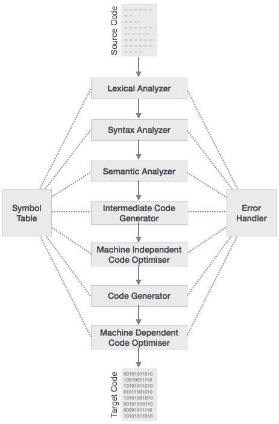
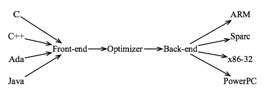
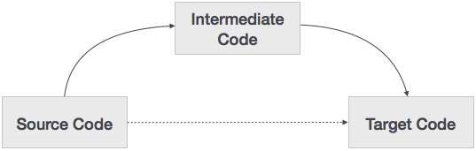

Pragmatic optimization
in modern programming
Demystifying the Compiler
Created by Marina Kolpakova for UNN
Outline
- Compilation trajectory
- Compiler optimizations
- Taxonomy
- Examples
- Obstacles
- Flags and directives
- Helping the compiler
- Summary
Executable generation phases
- Pre-processing
gcc -E test.cc,cl /E test.ccPre-process, but don't compile.
- Compilation
gcc -S test.cc,cl /FA test.ccCompile but don't assemble.
- Assembly
gcc -c test.cc,cl /c test.ccAssemble but don't link.
- Linking
gcc test.cc,cl test.ccLink object files and generate the executable.
Compiler trajectory
Compiler trajectory
- Lexical Analysis
- scans the source code as a stream of characters & converts it into lexemes (tokens).
- Syntax Analysis
- takes the token produced by lexical analysis as input and generates a syntax tree. Source code grammar (syntactical correctness) is checked here.
- Semantic Analysis
- checks whether the syntax tree constructed follows the rules of language (eg, type checks).
- Intermediate Code Generation
- represents a program for some abstract machine. It is in between the high-level language and the machine language.
- Code Optimization
- does code optimization of the intermediate code (eg, redundancy elimination).
- Code Generation
- takes the optimized representation of the intermediate code and maps it to the target machine language.
Fontend and backend
- No requirement for a full native compiler for each new target or programming language
- Only backend part needed to support every new machine
- Only fontend part needed to support every new programming language
- Most of optimization resemble for all targets and could be applied in between font end and backend.
Intermediate language
It becomes easier to apply code optimization techniques on the intermediate code. Modern compiler usually use 2 levels of intermediate representation (IR).
- High Level IR
- is close to the source and can be easily generated from the source code. Some code optimizations are possible, is less preferred for target machine optimization.
- Low Level IR
- is close to the target machine and suitable for register allocation, instruction selection, peephole, etc, is used for machine-dependent optimizations.
Intermediate language
- Language-specific: it can be used for JIT compilation later:
- Java, Scala bute code; CLI for .NET languages like C#, F#, PTX for GPU shaders.
- language independent like three-address code (similar to classic RISC ISA).
Three-Address Code (TAC)
|
|
Here r1, r2, etc are as abstract registers.
Three-Address Code
- Quadruples has four fields: operator, arg1, arg2, and result
Op arg1 arg2 result * c d r1 + b r1 r2 + r2 r1 r3 = r3 a - Triples or Indirect triples has three fields : op, arg1, and arg2.
Op arg1 arg2 * c d + b (0) + (1) (0) = (2)
Intermediate language
Provide font-end independent code representation.
- GENERIC and GIMPLE
- GNU Compiler Collection gcc
(
-fdump-tree-all -fdump-tree-ssa -fdump-tree-optimized -fdump-rtl-all) - LLWM IL
- clang and other LLWM based compilers (
-emit-llvm) - CIL (C Intermediate Language)
- Visual Studio cl.exe
clang -Os -S -emit-llvm squere.c -o squere.ll; cat squere.ll
|
|
Towards a compiler
- Correctness is always emphasized over performance
- For typical constructs the compiler will usually do a better job than programmer
- A compiler is not aware of semantics of your program
- Learn a compiler well and stick with it
- Express your intentions to the compiler clearly
- Compiler optimization is a multi-phase iterative process
- Performing one optimization enables others
- Most optimizations need to be applied in order
Optimization obstacles: pointer aliasing
|
|
Are they equal?
Optimization obstacles: pointer aliasing
|
|
Aliasing refers to the situation where the same memory location can be accessed using different names.
Strict aliasing assumption
Strict aliasing is an assumption, made by the C (or C++) compiler, that dereferencing pointers to objects of different types will never refer to the same memory location.
This assumption enables much more optimization, but programmer should follow strict aliasing rules to get code working correctly.
void check(int32_t *h, int64_t *k)
{
*h = 5;
*k = 6;
printf("%d\n", *h);
}
int main (void)
{
int64_t k;
check((int32_t *)&k, &k);
return 0;
}gcc -O1 cast.c -o cast3 ; ./cast3 results in 6
gcc -O2 cast.c -o cast3 ; ./cast3 results in 5
Optimization obstacles: functional calls
|
|
Are they equal?
Optimization obstacles: functional calls
|
|
Are they equal?
Pure functions
- Pure function
- is a function if both below statements hold about the function:
- The function always evaluates the same result value given the same argument value(s). The function result value cannot depend on any hidden information or state that may change while program execution proceeds or between different executions of the program, nor can it depend on any external input from I/O devices.
- Evaluation of the result does not cause any semantically observable side effect or output, such as mutation of mutable objects or output to I/O devices.
Pure functions are much easy to optimize:
- Use static keyword to help the compiler to deduces whether the function is pure
- Use constexpr keyword for c++11 to hint a compiler that function could be evaluated in compile time
- Most functions from math.h are not pure.
Function body inlining
Replacing a subroutine call with the code from the original function.
- Enables other optimizations (including auto-vectorization)
- Eliminates overhead of function calls
Optimization obstacles: Exceptions
Optimization obstacles: Storage type global variables
Optimization obstacles: Floating point
Optimization levels
- -O0 (the default)
- No optimization; generates unoptimized code but has the fastest compilation time.
- -O1
- Moderate optimization; optimizes reasonably well but does not degrade compilation time significantly.
- -O2
- Full optimization; generates highly optimized code and has the slowest compilation time.
- -O3
- Full optimization as in `-O2'; also uses more aggressive automatic inlining of subprograms within a unit (Inlining of Subprograms) and attempts to vectorize loops.
- -Os
- Optimize space usage (code and data) of resulting program.
enabled optimizations: GCC -O3
GNU C (Ubuntu 4.9.2-0ubuntu1~14.04) version 4.9.2 (x86_64-linux-gnu)
touch empty.c && gcc -O3 -S -fverbose-asm empty.coptions enabled: -faggressive-loop-optimizations -fasynchronous-unwind-tables -fauto-inc-dec -fbranch-count-reg -fcaller-saves -fcombine-stack-adjustments -fcommon -fcompare-elim -fcprop-registers -fcrossjumping -fcse-follow-jumps -fdefer-pop -fdelete-null-pointer-checks -fdevirtualize -fdevirtualize-speculatively -fdwarf2-cfi-asm -fearly-inlining -feliminate-unused-debug-types -fexpensive-optimizations -fforward-propagate -ffunction-cse -fgcse -fgcse-after-reload -fgcse-lm -fgnu-runtime -fgnu-unique -fguess-branch-probability -fhoist-adjacent-loads -fident -fif-conversion -fif-conversion2 -findirect-inlining -finline -finline-atomics -finline-functions -finline-functions-called-once -finline-small-functions -fipa-cp -fipa-cp-clone -fipa-profile -fipa-pure-const -fipa-reference -fipa-sra -fira-hoist-pressure -fira-share-save-slots -fira-share-spill-slots -fisolate-erroneous-paths-dereference -fivopts -fkeep-static-consts -fleading-underscore -fmath-errno -fmerge-constants -fmerge-debug-strings -fmove-loop-invariants -fomit-frame-pointer -foptimize-sibling-calls -foptimize-strlen -fpartial-inlining -fpeephole -fpeephole2 -fpredictive-commoning -fprefetch-loop-arrays -free -freg-struct-return -freorder-blocks -freorder-blocks-and-partition -freorder-functions -frerun-cse-after-loop -fsched-critical-path-heuristic -fsched-dep-count-heuristic -fsched-group-heuristic -fsched-interblock -fsched-last-insn-heuristic -fsched-rank-heuristic -fsched-spec -fsched-spec-insn-heuristic -fsched-stalled-insns-dep -fschedule-insns2 -fshow-column -fshrink-wrap -fsigned-zeros -fsplit-ivs-in-unroller -fsplit-wide-types -fstack-protector -fstrict-aliasing -fstrict-overflow -fstrict-volatile-bitfields -fsync-libcalls -fthread-jumps -ftoplevel-reorder -ftrapping-math -ftree-bit-ccp -ftree-builtin-call-dce -ftree-ccp -ftree-ch -ftree-coalesce-vars -ftree-copy-prop -ftree-copyrename -ftree-cselim -ftree-dce -ftree-dominator-opts -ftree-dse -ftree-forwprop -ftree-fre -ftree-loop-distribute-patterns -ftree-loop-if-convert -ftree-loop-im -ftree-loop-ivcanon -ftree-loop-optimize -ftree-loop-vectorize -ftree-parallelize-loops= -ftree-partial-pre -ftree-phiprop -ftree-pre -ftree-pta -ftree-reassoc -ftree-scev-cprop -ftree-sink -ftree-slp-vectorize -ftree-slsr -ftree-sra -ftree-switch-conversion -ftree-tail-merge -ftree-ter -ftree-vrp -funit-at-a-time -funswitch-loops -funwind-tables -fverbose-asm -fzero-initialized-in-bss -m128bit-long-double -m64 -m80387 -malign-stringops -mavx256-split-unaligned-load -mavx256-split-unaligned-store -mfancy-math-387 -mfp-ret-in-387 -mfxsr -mglibc -mieee-fp -mlong-double-80 -mmmx -mno-sse4 -mpush-args -mred-zone -msse -msse2 -mtls-direct-seg-refs -mvzeroupper
Optimization levels
example how optimization level effects the performanceAuto-vectorization
- Machine code generation that takes advantage of vector instructions.
- Most of all modern architectures have vector units (co-processors or specialized pipes)
- MMX, SSE, SSE2, SSE4, AVX, AVX-512
- AltiVec, VSX
- ASIMD (NEON), MSA
- Enabled by inlining, unrolling, fusion, software pipelining, inter-procedural optimization, etc.
Compiler optimization reports
optimizer reports form specific compilers (get report from hexagon scheduling!!!)
Hints: Aligning Data
- Specifying alignment eliminates manual padding
- Helps with auto-vectorization as well
/* GCC, align to 16 bytes */
unsigned long lock __attribute__ ((aligned(16)));
/* Intel, align to 16 bytes */
__declspec(align(16)) unsigned long lock;
Hints: prefetching
False optimizations
Software pipelining
IPA: Interprocedural optimization
Link-Time Code Generation
When LTCG is enabled (by specifying the /GL compiler switch), the compiler driver (cl.exe) goggle about gcc analogy C Intermediate Language (CIL) GCC 4.8 will feature a few improvements when it comes to LTO, a.k.a. Link-Time OptimizationRegister allocation
CSO (common subexpression optimization) and register allocation
16-32 registers are optimal register number for the compiler
Compilers for DSP
Compilers are more important for low-power especially VLIW targets
THE END